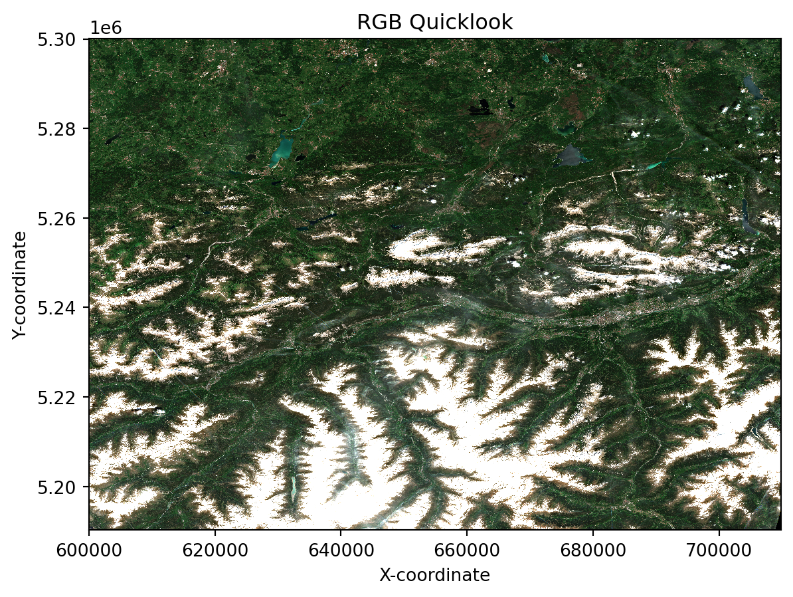
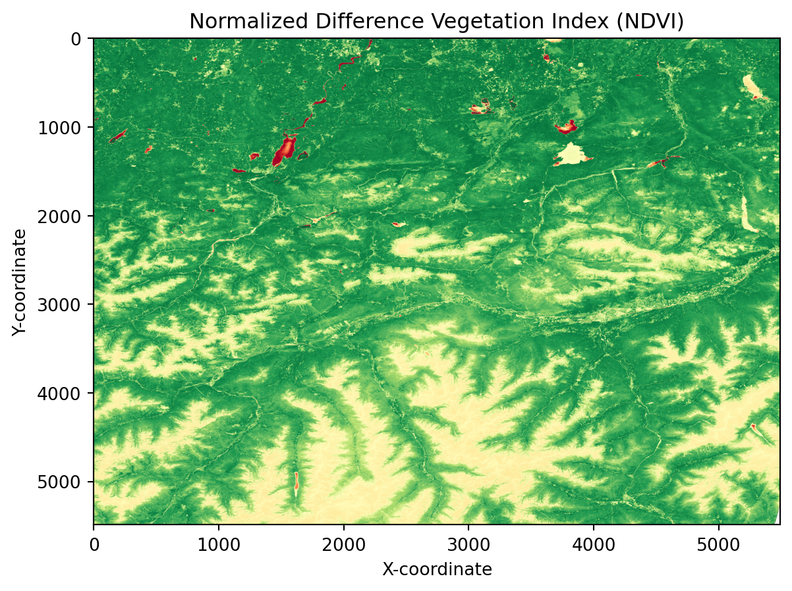

import numpy as np
import matplotlib.pyplot as plt
from typing import List, Optional, cast
from pystac import Collection, MediaType
from pystac_client import Client, CollectionClient
from datetime import datetime
import xarray as xr
import dask.array as da
from dask.distributed import Client as DaskClient # and in the end take advantage of the optimized .zarr formatFrom STAC to Data: Accessing EOPF Zarr with xarray
Introduction
In this tutorial we will demonstrate how to access EOPF Zarr products directly from the EOPF Sentinel Zarr Sample Service STAC Catalog.
What we will learn
- ☁️ How to open cloud-optimised datasets from the EOPF Zarr STAC Catalog with
xarray - 🔎 Examine loaded datasets
- 📊 Perform simple data analyses with the loaded data
Prerequisites
This tutorial requires the xarray-eopf extension for data manipulation. To find out more about the library, access the documentation.
It is advised that you go through the previous section, as it gives you an introduction on how to programmatically access a STAC catalog.
Import libraries
Helper functions
list_found_elements
As we are expecting to visualise several elements that will be stored in lists, we define a function that will allow us retrieve item id’s and collections id’s for further retrieval.
def list_found_elements(search_result):
id = []
coll = []
for item in search_result.items(): #retrieves the result inside the catalogue.
id.append(item.id)
coll.append(item.collection_id)
return id , collEstablish a connection to the EOPF Zarr STAC Catalog
Our first step is to a connection to the EOPF Zarr STAC Catalog. This involves defining the url of the STAC endpoint. See the previous section for a more detailed explanation how to retrieve the end point url.
Through the Client.open() function, we can establish the connection to the EOPF Zarr STAC catalog by providing the specific url.
max_description_length = 100
eopf_stac_api_root_endpoint = "https://stac.core.eopf.eodc.eu/" #root starting point
eopf_catalog = Client.open(url=eopf_stac_api_root_endpoint)
# eopf_catalog #print to have an interative visualisationFiltering for items of interest
For this tutorial, we will focus on the Sentinel-2 L2A Collection. The EOPF STAC Catalog corresponding id is: sentinel-2-l2a.
As we are interested in retrieving and exploring an Item from the collection, we will focus again over the Innsbruck area we have defined in the previous tutorial.
innsbruck_s2 = eopf_catalog.search( # searching in the Catalog
collections= 'sentinel-2-l2a', # interest Collection,
bbox=(11.124756, 47.311058, # AOI extent
11.459839,47.463624),
datetime='2020-05-01T00:00:00Z/2025-05-31T23:59:59.999999Z' # interest period
)
combined_ins =list_found_elements(innsbruck_s2)
print("Search Results:")
print('Total Items Found for Sentinel-2 L-2A over Innsbruck: ',len(combined_ins[0]))Search Results:
Total Items Found for Sentinel-2 L-2A over Innsbruck: 27Let us now select the first Item in the list of 27 Items.
first_item_id=combined_ins[0][0]
print(first_item_id)S2B_MSIL2A_20250530T101559_N0511_R065_T32TPT_20250530T130924In a next step, we retrieve the url of the cloud location for the specific item and load the selected Item with the help of xarray.
c_sentinel2 = eopf_catalog.get_collection('sentinel-2-l2a')
#Choosing the first item available to be opened:
item= c_sentinel2.get_item(id=first_item_id)
item_assets = item.get_assets(media_type=MediaType.ZARR)
cloud_storage = item_assets['product'].href
print('Item cloud storage URL for retrieval:',cloud_storage)Item cloud storage URL for retrieval: https://objects.eodc.eu:443/e05ab01a9d56408d82ac32d69a5aae2a:202505-s02msil2a/30/products/cpm_v256/S2B_MSIL2A_20250530T101559_N0511_R065_T32TPT_20250530T130924.zarrExamining Dataset Structure
In the following step, we open the cloud-optimised Zarr dataset using xarray.open_datatree supported by the zarr engine.
The subsequent loop then prints out all the available groups within the opened DataTree, providing a comprehensive overview of the hierarchical structure of the EOPF Zarr products.
client = DaskClient() # Set up local dask cluster
client
dt = xr.open_datatree(
cloud_storage, # the cloud storage url from the Item we are interested in
engine="zarr",
chunks="auto" # automatically determine chunk sizes using dask
)
for dt_group in sorted(dt.groups):
print("DataTree group {group_name}".format(group_name=dt_group)) # getting the available groupsDataTree group /
DataTree group /conditions
DataTree group /conditions/geometry
DataTree group /conditions/mask
DataTree group /conditions/mask/detector_footprint
DataTree group /conditions/mask/detector_footprint/r10m
DataTree group /conditions/mask/detector_footprint/r20m
DataTree group /conditions/mask/detector_footprint/r60m
DataTree group /conditions/mask/l1c_classification
DataTree group /conditions/mask/l1c_classification/r60m
DataTree group /conditions/mask/l2a_classification
DataTree group /conditions/mask/l2a_classification/r20m
DataTree group /conditions/mask/l2a_classification/r60m
DataTree group /conditions/meteorology
DataTree group /conditions/meteorology/cams
DataTree group /conditions/meteorology/ecmwf
DataTree group /measurements
DataTree group /measurements/reflectance
DataTree group /measurements/reflectance/r10m
DataTree group /measurements/reflectance/r20m
DataTree group /measurements/reflectance/r60m
DataTree group /quality
DataTree group /quality/atmosphere
DataTree group /quality/atmosphere/r10m
DataTree group /quality/atmosphere/r20m
DataTree group /quality/atmosphere/r60m
DataTree group /quality/l2a_quicklook
DataTree group /quality/l2a_quicklook/r10m
DataTree group /quality/l2a_quicklook/r20m
DataTree group /quality/l2a_quicklook/r60m
DataTree group /quality/mask
DataTree group /quality/mask/r10m
DataTree group /quality/mask/r20m
DataTree group /quality/mask/r60m
DataTree group /quality/probability
DataTree group /quality/probability/r20mRoot Dataset Metadata
We specifically look for groups containing data variables under /measurements/reflectance/r20m (which corresponds to Sentinel-2 bands at 20m resolution). The output provides key information about the selected group, including its dimensions, available data variables (the different spectral bands), and coordinates.
# Get /measurements/reflectance/r20m group
groups = list(dt.groups)
interesting_groups = [
group for group in groups if group.startswith('/measurements/reflectance/r20m')
and dt[group].ds.data_vars
]
print(f"\n🔍 Searching for groups with data variables in '/measurements/reflectance/r20m'...")
🔍 Searching for groups with data variables in '/measurements/reflectance/r20m'...if interesting_groups:
sample_group = interesting_groups[0]
group_ds = dt[sample_group].ds
print(f"Group '{sample_group}' Information")
print("=" * 50)
print(f"Dimensions: {dict(group_ds.dims)}")
print(f"Data Variables: {list(group_ds.data_vars.keys())}")
print(f"Coordinates: {list(group_ds.coords.keys())}")
else:
print("No groups with data variables found in the first 5 groups.")Group '/measurements/reflectance/r20m' Information
==================================================
Dimensions: {'y': 5490, 'x': 5490}
Data Variables: ['b01', 'b02', 'b03', 'b04', 'b05', 'b06', 'b07', 'b11', 'b12', 'b8a']
Coordinates: ['x', 'y']In a next step, we inspect the attributes of the root dataset within the DataTree. Attributes often contain important high-level metadata about the entire product, such as processing details, STAC discovery information, and more. We print the first few attributes to get an idea of the available metadata.
# Examine the root dataset
root_dataset = dt.ds
print("Root Dataset Metadata")
if root_dataset.attrs:
print(f"\nAttributes (first 3):")
for key, value in list(root_dataset.attrs.items())[:3]:
print(f" {key}: {str(value)[:80]}{'...' if len(str(value)) > 80 else ''}")Root Dataset Metadata
Attributes (first 3):
other_metadata: {'AOT_retrieval_model': 'SEN2COR_DDV', 'L0_ancillary_data_quality': '4', 'L0_eph...
stac_discovery: {'assets': {'analytic': {'eo:bands': [{'center_wavelength': 0.4423, 'common_name...Visualising the RGB quicklook composite
EOPF Zarr Assets include a quick-look RGB composite, which we now want to open and visuliase. We open the Zarr dataset again, but this time, we specifically target the quality/l2a_quicklook/r20m group and its variables.
This group typically contains a true colour (RGB) quick-look composite, which is a readily viewable representation of the satellite image.
We use xr.open_dataset() and specify the following set of arguments in order to load the quick-look.
## Visualising the RGB quicklook composite:
ds = dt['quality/l2a_quicklook/r20m'].to_dataset()
ds_20_ql= ds['tci']As soon as we load the selected group, we can create a simple plot with imshow() to see the quick-look.
ds_20_ql.plot.imshow(rgb="band")
plt.title('RGB Quicklook')
plt.xlabel('X-coordinate')
plt.ylabel('Y-coordinate')
plt.grid(False) # Turn off grid for image plots
plt.axis('tight') # Ensure axes fit the data tightly(np.float64(600000.0),
np.float64(709800.0),
np.float64(5190240.0),
np.float64(5300040.0))
Simple Data Analysis: Calculating NDVI
Let us now do a simple analysis with the data from the EOPF Zarr STAC Catalog. Let us calculate the Normalized Difference Vegetation Index (NDVI).
First, we access the /measurements/reflectance/r20m group, as the bands we are interested in are at 20m resolution: the Red (B04) and Near-InfraRed (B08A) bands, which are ones needed for the calculation of the NDVI.
# Visualising the NIR reflectance band and select a subsample region with a specific bounding box and a specific resolution.
resolution = 2000 # in meters
red_nir = dt ['/measurements/reflectance/r20m'].to_dataset()
red_nir.isel(
x=slice(
red_nir['x'].min().values.flat[0],
int(red_nir['x'].min().values.flat[0] + 100000),
int(resolution/20),
),
y=slice(
red_nir['y'].min().values.flat[0],
int(red_nir['y'].min().values.flat[0] + 100000),
int(resolution/20),
)
)<xarray.Dataset> Size: 0B
Dimensions: (y: 0, x: 0)
Coordinates:
* y (y) int64 0B
* x (x) int64 0B
Data variables:
b01 (y, x) float64 0B dask.array<chunksize=(0, 0), meta=np.ndarray>
b02 (y, x) float64 0B dask.array<chunksize=(0, 0), meta=np.ndarray>
b03 (y, x) float64 0B dask.array<chunksize=(0, 0), meta=np.ndarray>
b04 (y, x) float64 0B dask.array<chunksize=(0, 0), meta=np.ndarray>
b05 (y, x) float64 0B dask.array<chunksize=(0, 0), meta=np.ndarray>
b06 (y, x) float64 0B dask.array<chunksize=(0, 0), meta=np.ndarray>
b07 (y, x) float64 0B dask.array<chunksize=(0, 0), meta=np.ndarray>
b11 (y, x) float64 0B dask.array<chunksize=(0, 0), meta=np.ndarray>
b12 (y, x) float64 0B dask.array<chunksize=(0, 0), meta=np.ndarray>
b8a (y, x) float64 0B dask.array<chunksize=(0, 0), meta=np.ndarray>In a next step, we cast the red (B04) and Near-Infrared (B08a) arrays. This is important for accurate mathematical operations, which we will conduct in the next cell.
red_f = red_nir['b04']
nir_f = red_nir['b8a']Now, we perform the initial steps for NDVI calculation: - sum_bands: Calculates the sum of the Near-Infrared and Red bands. - diff_bands: Calculates the difference between the Near-Infrared and Red bands.
To prevent division by zero errors in areas where both red and NIR bands might be zero (e.g., water bodies or clouds), this line replaces any NaN values resulting from division by zero with the 0 value. This ensures a clean and robust NDVI product.
sum_bands = nir_f + red_f
zero_mask = (sum_bands == 0) # to avoid 0 division
sum_bands_z= sum_bands.copy()
sum_bands_z = da.where(sum_bands_z == 0, 1, sum_bands_z)
diff_bands = nir_f - red_f
ndvi = da.where(sum_bands == 0, 0, diff_bands / sum_bands_z)In a final step, we can visualise the calculated NDVI.
plt.imshow(ndvi,cmap='RdYlGn', vmin=-1, vmax=1)
plt.title('Normalized Difference Vegetation Index (NDVI)')
plt.xlabel('X-coordinate')
plt.ylabel('Y-coordinate')
plt.grid(False) # Turn off grid for image plots
plt.axis('tight') # Ensure axes fit the data tightly
# Display the plot
plt.show()
💪 Now it is your turn
With the foundations learned so far, you are now equipped to access products from the EOPF Zarr STAC catalog. These are your tasks:
Task 1: Explore five additional Sentinel-2 Items for Innsbruck
Replicate the RGB quick-look and have an overview of the spatial changes.
Task 2: Calculate NDVI
Replicate the NDVI calculation for the additional Innsbruck items.
Task 3: Applying more advanced analysis techniques
The EOPF STAC Catalog offers a wealth of data beyond Sentinel-2. Replicate the search and data access for data from other collections.
Conclusion
In this section we established a connection to the EOPF Sentinel Zarr Sample Service STAC Catalog and directly accessed an EOPF Zarr item with xarray. In the tutorial you are guided through the process of opening hierarchical EOPF Zarr products using xarray’s DataTree, a library designed for accessing complex hierarchical data structures.
What’s next?
In the following section we will present several tools, that will allow us to integrate the available Sentinel Products in the EOPF Sentinel Zarr Sample Service STAC Catalog to EO workflows developed through tools like R and Qgis.